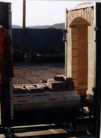
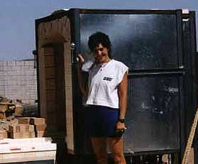

| Building My Dream Kiln III
Michelle Lowe of Desert Dragon Pottery describes
building her 'Dream Kiln' (Part 3)
The Cart
The cart was a bigger job. I consulted in detail with my friend
Rusty Wiltjer on this
part, and his suggestion to load the cart with hardbrick on top
to hold the softbrick in place while you "sand it down" to fit was
brilliant! It worked like a charm, with a layer of hardbrick between
the thermal insulation and softbrick to give the softbrick a sturdier
base. I had to have Richard, the welder, redo parts on the cart
when I realized what I needed finally. I think I bricked the cart
a total of three times before it worked smoothly. It took some correcting
of the top layer of bricks on the cart, so it would fit as it rolled
into the existing kiln properly without catching and pulling bricks
off on its way in or out. Once I had it so it fit, I ran the cart
in and out several times to smooth and sand the seal. Richard showed
up in the midst of all this and finished the door pulls, latches
and some other final pieces.
Now I was ready to FIRE,
I thought. I realized after I loaded up the first bisque load that
I hadn't put the pyrometer in. I used cones and although it fired
quite unevenly (06 flat on top barely down on bottom), I was pleased
with the speed of firing and how easily I seemed to get a feel for
the burner adjustments. I pretty much left the damper alone for
the first few firings. I decided to test my cone 6 oxidation glazes
to see what they would do in a gas kiln. I got some wonderful results
in the first two firings, even though I overfired them to cone 8
on the top with cone 6 at the bottom. Meanwhile, I discussed the
kiln with my buddies online and they gave me some ideas for some
"tweaking" to do on it. I decided to make a couple changes, eventually,
but will be firing it, meanwhile.
I will continue to document this process with photos, and eventually
finish up this ongoing page with some beautiful glazed loads!
> previous
> start
Article courtesy of Michelle Lowe of Desert
Dragon Pottery.
© 2003 Desert Dragon Pottery
|